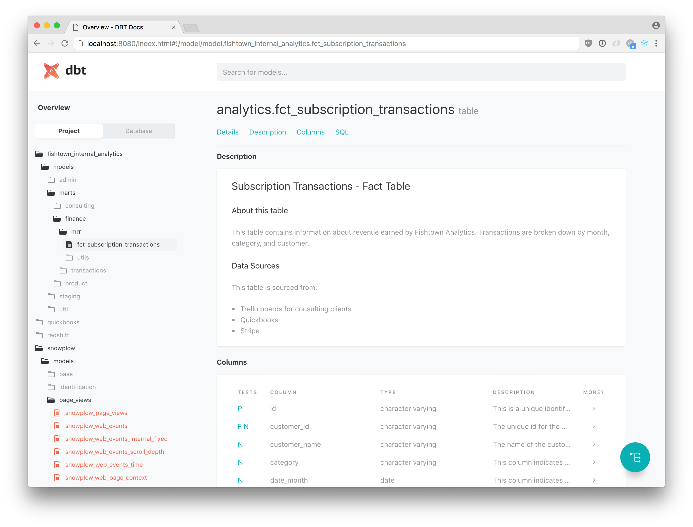
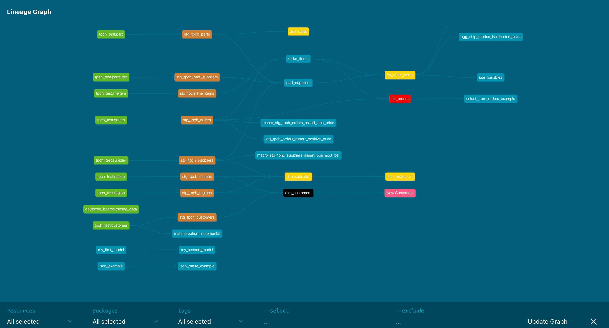
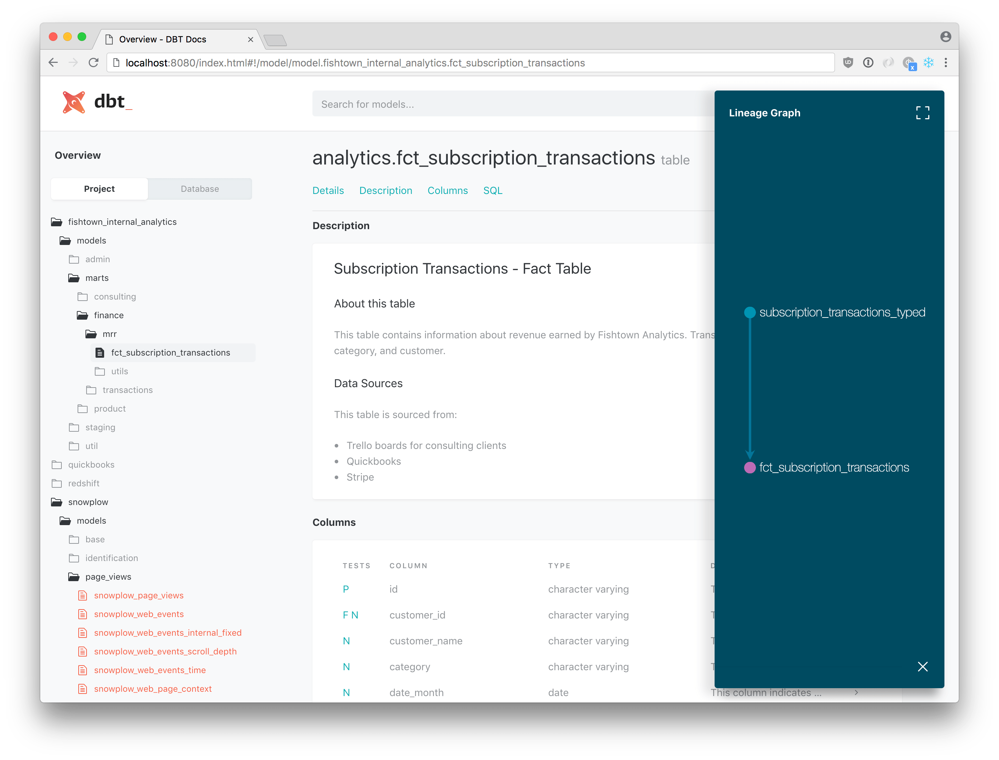

dbt docs — your project as a websitedbt builds a documentation site directly from your project. Sources, models, columns, lineage, the actual compiled SQL — all browsable, all hyperlinked. The site is regenerated from the manifest each time you ask for it; nothing’s hand-maintained.
This exercise generates the docs and serves them locally.

dbt docs generate doesIt produces two artifacts under dbt_project/target/:
manifest.json — the parsed graph. Already updated by every dbt run / dbt build; dbt docs generate just makes sure it’s fresh.catalog.json — column-level metadata pulled by querying the warehouse: data types, column descriptions (where given), row counts. This is the new file. Generating it requires the warehouse to be reachable, since dbt actually describes each table.The docs UI is a static site (HTML + JavaScript) shipped with dbt. When you launch it, dbt loads manifest.json + catalog.json into the page and renders the lineage graph, column tables, and SQL panes from there.
cd dbt_project
dbt docs generate
Output ends with something like:
Catalog written to target/catalog.json
Then:
dbt docs serve
Opens a local web server (default http://localhost:8080) and your browser. Three things worth clicking around to:
raw_customers, raw_orders, raw_payments) flowing into blue staging models, into the intermediate, into the fact. Stage 2’s whole shape, visualized.
2. Source page → freshness columns. Empty for now (we haven’t configuredloaded_at_field), but this is where dbt source freshness results would show up.
3. A model page → “Compiled” tab. The actual SQL dbt sent to DuckDB, with {{ source(...) }} and {{ ref(...) }} already expanded. Useful for sanity-checking what the macros produced.

Stop the server with Ctrl+C when done.
Good for:
Not good for:
description: block in YAML and a docs block in markdown.You’ll round out descriptions and doc blocks in Stage 3 alongside tests. Stage 2’s job is just confirming that dbt docs generate works and the output files land where they should.
dbt docs serve claims port 8080 is in use. Pass a different port: dbt docs serve --port 8081.dbt docs generate ran but catalog.json wasn’t refreshed. Re-run dbt docs generate after dbt build so the catalog includes column types from the just-built tables.http://localhost:8080 manually.manifest.json staleness issue. dbt parse or another dbt build will refresh it.Press n to start the exercise.
1. From the repo root:
cd dbt_project
2. Generate the docs site:
dbt docs generate
Output should end with a line like:
Catalog written to target/catalog.json
That’s the new file — column-level metadata pulled by introspecting your DuckDB tables. target/manifest.json was already up-to-date from the dbt build you ran in the previous exercise.
3. (Optional) Serve the site and browse:
dbt docs serve --port 8080
Your browser should open to http://localhost:8080. Click into:
jaffle_shop, stripe), three staging views, the intermediate, the fact.fct_orders — switch between the Details, Columns, and Compiled tabs. The Compiled tab shows the actual SQL dbt sent to DuckDB, with all {{ source(...) }} / {{ ref(...) }} macros expanded.jaffle_shop.raw_customers — column types pulled from DuckDB.Press Ctrl+C to stop the server when you’re done.
4. Confirm both artifacts exist and were just touched:
ls -la target/manifest.json target/catalog.json
Both should be very recent.
5. Press v.
dbt docs generate (run by the verifier) exits 0.target/manifest.json exists and was regenerated by this run (mtime is current).target/catalog.json exists and was regenerated by this run.If either file is missing or stale, the verifier fails — the most common cause is the warehouse being unreachable (DuckDB file deleted) or dbt parse choking on a YAML error.
| Symptom | Fix |
|---|---|
Could not connect to database |
DuckDB file is missing or locked. Run dbt build first to recreate it; close any other process that has the file open. |
dbt: command not found |
Activate the venv: source .venv/bin/activate. |
Address already in use on dbt docs serve |
Another dbt docs serve is still running, or another app owns port 8080. Use --port 8081. |
catalog.json missing after the run |
dbt docs generate requires query access to introspect tables. If it skipped the catalog with a warning about Skipping catalog generation, fix the warehouse connection first. |
Press n. Next is the Stage 2 wrap-up lesson on naming conventions — src_ / stg_ / int_ / fct_ / dim_ — followed by the stage-end quiz. After the quiz you’ve finished Stage 2 — the project now has every layer of a real dbt setup: sources, staging, intermediate, marts, and a docs site reflecting it all.